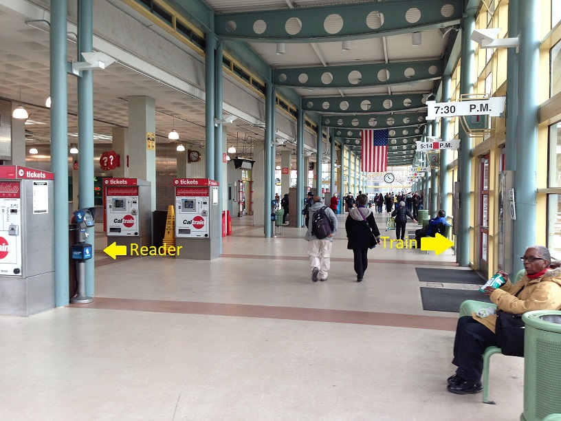
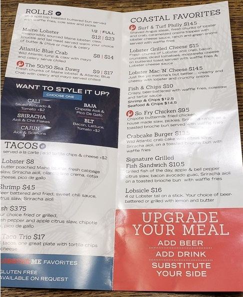

I recently visited San Francisco and met many people from a variety of tech and tech-adjacent areas. I also walked around the city and travelled to nearby Bay Area locations.[1] I came away with several findings.
Bad things are good
Within the Bay Area, I spent most of my time in San Francisco. It houses fewer than a million people, yet each year it attracts 25 million visitors. It's a top tourist destination with world famous attractions such as the Golden Gate Bridge, Fisherman's Wharf, cable cars, and Alcatraz, which are all great places for taking pictures and posting them to social media.
San Francisco also has a reputation for being a rather unpleasant place to live. Some common complaints are -
- It's common to see human excrement on sidewalks. In fact, finding a photogenic example was one of the tourist goals of my trip here, and it was by far my most memorable experience. For complicated social reasons, human excrement in public places is considered acceptable in San Francisco and unacceptable elsewhere. Here's me posing with some! (Content warning: poop visible in picture)
- Idiotic public transport. I took the Caltrain down to the Peninsula, and didn't succeed in paying the fare even though I intended to. Here's the Caltrain station:  I was meant to pay by tapping my transit card to a fare reader located in the train terminal. The fare reader is an inconspicuous metal post in an out-of-the-way location, located away from the direct path from the entrance to the train. In addition, there were no turnstiles or barriers to block my path, so I assumed that I would be paying on the train. Once on the train, though, there were no fare readers available. What caused this catastrophic design failures? Later on, I took the BART subway trains, which were an even bigger design disaster.
{kind=link}
- Aggressive homeless people. As a liberal city, its people are compassionate towards the homeless, and disapprove of active police repression to keep homeless people off the streets or in homeless shelters. Some homeless people unfortunately have mental health issues that cause them to lash out at passersby. With more homeless people on the streets, there is a higher probability of being the recipient of this aggression.
- Tent cities. As a liberal city, its people are compassionate towards longtime residents who want to maintain the unique character of their neighborhoods. This means that no new housing construction is allowed, which leads to sky-high housing prices. This is nice for the longtime residents who are now millionaires, but it means that most people cannot afford to live there. Some people deal with this by establishing tent cities on sidewalks, which are a form of low cost housing. Being unable to walk on the sidewalk does become an inconvenience for pedestrians, though.
This unpleasantness is representative of San Francisco. It's also worth seeking out, to experience cultural tourism. This is in contrast to seeing the Golden Gate Bridge or Fisherman's Wharf, which is experiential tourism. When people first go out to see the world, experiential tourism is what they have in mind - visiting the Eiffel Tower, Angkor Wat, the Forbidden City, the Grand Canyon. Yet I've noticed that there's a crossover point. After traveling extensively, one tends to want cultural tourism more than experiential tourism.
Cultural tourism is attractive because it is authentic. Fisherman's Wharf may be pleasant, but we know that it is a far cry from the typical day in the life of a local, so what are we really seeing? Eventually we start to experience a sense of ennui, even for landmarks we have never visited. This doesn't mean that all experiential tourism is valueless - the Golden Gate Bridge is genuinely a wonderful experience, for instance - but we can reach a point of diminishing returns.
Authentic experiences are also, for lack of a better word, unpleasant. I submit that authenticity is necessarily unpleasant. An unpleasant artefact that persists for a long time, and is not replicated elsewhere, must have some sort of unique cause. Understanding these causes, and why the unpleasantness doesn't go away, is the key to understanding culture. And if the purpose of travel is to expand our horizons, culture must be the most important component.
For example, why is there human poop on the streets in San Francisco, but none in New York, London, or Taipei? I have an exciting suggestion: maybe the existence of the street poop is one of the keys to San Francisco's success. Street poop is disliked by everyone. However, some people mind it much more than others. Complacent people and freeloading rent seekers come to mind as two categories of people who would be very reluctant to endure street poop. To an entrepreneur, on the other hand, street poop would only inspire them to dream bigger and work harder, because it acts as a reminder that there is so much to improve in the world. The poop is not so much a failure of the city authorities, but a secret weapon in the global arms race to attract talent.
Conversely, I believe that experiential tourism is manufactured by the opposite process. Something pleasant enough to be notable will be exploited, as profit seekers maximize its pleasantness at the cost of its original purpose. Fisherman's Wharf missed the container revolution and is no longer economically useful for shipping, but it is a picturesque place. Now, its value is completely tied to its ability to entertain tourists. A wharf with no useful shipping is a mockery of itself, but this inauthenticity and loss of functionality is the apotheosis of experiential tourism. At least it's nice to walk around, pose for pictures, and enjoy mediocre clam chowder!
No one particularly enjoys the experience of walking along the street and suddenly being harassed by a smelly person. But which is more memorable? Avoiding poop in the Tenderloin while a homeless person yells at you, or taking photos at Fisherman's Wharf? I'd guess that the former will be remembered much more fondly than the later.
This is an example of the difference between the experiencing self and the remembering self. Experiential tourism elevates the experiencing self. Cultural tourism elevates the remembering self. Experiential tourism is like eating a gallon of ice cream alone, wonderful in the moment but regretted afterwards. Cultural tourism is like going to the gym, uncomfortable in the moment but satisfying afterwards.
A brain teaser: All authentic things are unpleasant. All authentic things are good. Does it follow, then, that all unpleasant things are good?
It's hard to order food correctly
I ate at a lobster roll restaurant six times this trip, because it offered unmatched value and was quick and convenient. This is a food court restaurant that served extremely high quality seafood rolls, as well as a delicious lobster bisque, pleasantly aromatic. Here's the menu:
Some observations.
- Three quarters of the menu – "Tacos" and "Coastal Favorites", are bad options. Most of those options ignore the selling point, which is the lobster. The ones that are lobster are overpriced (lobster taco) or unappetizing (lobster mac'n'cheese).
- Ordering two half rolls costs one dollar more than ordering a full roll. Despite the small difference in price, though, the most common order was a full lobster roll.
- A full roll also comes with a side of fries. These were pretty standard fries, decently sized and reasonable quality. The existence of the fries is hidden inconspicuously at the top of the left side of the menu, right under the "Rolls" heading. Unbelievably, it's even harder to see at the in-store display. I didn't know it came with sides the first time I ordered, and I suspect other people didn't know either. Because of how half rolls and full rolls are priced, ordering two half rolls means that we get an extra side of fries for $1.
- Ordering a half roll gives us 60-70% as much seafood as ordering a full roll, because they don't weigh it exactly. This means that ordering two half rolls gives us around 1.2 to 1.4 times the amount of seafood as ordering a full roll. That's an incredible bargain for $1, even if we aren't interested in getting an extra side of fries.
- But we shouldn't neglect the extra side! On the takeaway menu, it's in the bottom right and says "Substitute your side" with no clarity on what we can substitute. On the in-store menu, it's not even mentioned at all, and is only visible on a small plaque see right as you order. It turns out that we do actually have the ability to substitute our sides. There are a bunch of unexciting choices such as crab loaded fries, clam chowder, or Mexican fries, but the best value option here is the lobster bisque upgrade for $2. It's easily apparent how good the bisque is even without trying it, because you pass by the pot of bisque when queuing. It smells absolutely wonderful. There is also a generous helping of lobster meat on top of the soup, it's just incredible value. Sadly, almost no one substituted their fries for the bisque because the cashier never prompted anyone, and you're under tremendous time pressure since you need to order as soon as you see the plaque.
- Most people ordered the lobster roll, and never tried the 50/50 option, which is half lobster, half crab. Their crab meat is also very good and the 50/50 mix is delicious. The quantity of seafood we get by ordering a 50/50 is also significantly larger than if we order a lobster roll. I'd expect that anyone who likes lobster will also like the addition of the crab meat. The quantity is so much larger that I think there is around 80% as much lobster as on a pure lobster roll. Additionally, the 50/50 roll costs 25% less than the lobster roll. This means that on a price by weight basis, we actually get more lobster by ordering the 50/50!
So to summarize, the default order is a full lobster roll with waffle fries, for $23. The optimal order is two 50/50 half rolls, sides changed to lobster bisque, for $22. We get almost twice as much seafood, and two bowls of top quality soup, and pay a dollar less!
The default order is roughly a fair price for the location and quality of the food, but the optimal order is an incredible bargain. I'd conservatively estimate that we get twice as much value simply by understanding the relative value of menu options. Yet 90% or more of customers were making clearly suboptimal decisions, giving away tons of value.
An environment where huge bargains like this can be had with no trade-off indicates an area of easy profit. Restaurants are generally a cutthroat, competitive business, but I'm pretty comfortable that this restaurant is very profitable.
It's also only rated 3 out of 5 on Yelp, which is pretty bad. 68% of restaurants are rated higher than 3 stars. What's going on here?
- It's a lobster roll place, a relatively high-end product, located in a food court. People who go to food courts tend to be price sensitive and quality insensitive.
- This restaurant always has people lining up, so it's unnecessary for them to offer good service. It's a food court, after all. People who make the effort to post a review are likely to value good service.
- Marginal restaurants will aggressively try to boost their Yelp rankings, because it can drive sales. They don't need to do that, so they look worse in comparison to others.
When people are price sensitive, look for quality. When people are quality sensitive, look for bargains. This is a good strategy for food, and it also applies to life. A Chinese proverb says, "The most dangerous place is the safest." Warren Buffett said, "You want to be greedy when others are fearful. You want to be fearful when others are greedy." Paul Arden says, "Whatever you think, think the opposite."
Intelligence is overrated
I think people in the Bay Area generally overestimate the value of applying intellectual firepower to situations where people, not systems, are the main driver of outcomes. An example of the former is psychotherapy, whereas an example of the latter is the creation of rockets and spacecraft. This often leads to blind spots. People thoroughly understand the aspects where intellection illuminates, but are unaware of other aspects, so they have an inflated view of their skill.
During my trip, three people talked to me on separate occasions about their experiences with polyamory. The argument in favor of polyamory was presented as increasing total utility in the world. Because total utility increased, it's ethically good to be polyamorous, according to utilitarianism[2]. These people seemed like they benefited from being in polyamorous relationships, and they had unusually high ability to apply logic to their emotions.
I heard that polyamory should only be attempted by the most qualified people, those able to manage their emotions and deal with feelings of jealousy. Implicit is the idea that dumber, uncool, immature people are unable to deal with this, and should stick with monogamy.
Presenting polyamory as a high status behavior means that many people who are unsuited for polyamory will try, hurting themselves and others in the process. A few people benefit, while many others harm themselves and others by stretching beyond their ability and trying a relationship style that they are unable to realize. This is an example of the rationality failure of typical minding, where someone assumes that because polyamory is good for them, it'll be good for everyone. What's so ethical about encouraging people to damage themselves?
I also discussed open borders with a few different people, all of whom were intelligent, ambitious, and hard-working. Their opinion was that open borders will massively increase economic prosperity, similar to picking up trillion-dollar bills from the sidewalk. Being against open borders means ignorance, tribalism, racism, or low intelligence.
Now, we can make a strong case that open borders is the morally justified position. But using economics as the justification shows a lack of understanding of what exactly creates economic value in a society, and an ignorance of the second order effects. (It's not exactly wise to "cooperate" in an environment where your competitors are likely to "defect".[3]) From my discussions, it appeared that this wasn't due to a lack of thought. It was due to a lack of awareness that these things existed at all.
In both of these cases, lessons from social science are ignored. The moral justification for polyamory ignores the history of monogamy as a solution to the problems of polygyny, and the economic justification for open borders ignores the political science research on social capital and state capacity. Tech creates the future and abandons the past, but the past still holds valuable lessons. Social science often produces wrong answers, because the problems it attempts to solve are exceedingly complicated. But this doesn't mean that all social science is useless! To ignore social science just because it is often wrong denies us access to many useful frameworks for thinking about the world.
Determination beats ambition
I heard from multiple people that ambition was extremely high in the Bay Area, possibly being the biggest concentration of ambitious people in the world. In some circles this is clearly true - entrepreneurs have sky high ambition and work extremely hard. On the other hand, software engineers are probably the most representative example of the tech industry worker, and they work relatively few hours. The software engineers I met worked 5 to 7 hours on weekdays, and never on weekends. Most of them seemed content to continue their pleasant lifestyle. How should we square this circle?
I propose that there is a slight category error here, and that ambition here is not actually that high. Instead, I'd say that people score highly on determination. I mean something different from grit or ambition or passion here. Determination is the answer to the question, "If you want to achieve something, how likely is it that you'll achieve it?" People in the Bay Area are exceptionally determined and tend to achieve their goals, no matter what the goals are. Not everyone has a high-minded pursuit like curing cancer or colonizing Mars, but whatever they decide on, they'll get it done. The ability to execute well seems to be their standout attribute.
For myself, after I've decided that I want to achieve something, everything along the path to that goal costs no willpower. I still tire at the same rate as usual, and I don't magically gain any extraordinary abilities, but I can plug away consistently without burning out. To an outsider, it would look as if I was spending an enormous amount of effort and dedicating myself completely to my work, but to me, it's the path of least resistance. I wonder how it works for other people?
I believe that having high determination is more important than having high ambition. What's the point of being ambitious without the ability to achieve things? But if there's a large aggregated population with the ability to achieve things, it's much easier for the dreamers to assemble a team to forge their desired reality. This holds true even if each person in the team has only modest goals.
Ambition is overrated. Determination is the secret to Silicon Valley.
Social capital is uncelebrated
Compared to Hong Kong, the biggest difference I noticed was the immense difference in the amount of social capital. Social capital refers to the factors affecting the effectiveness social groups, such as the strength of networks of relationships, shared identity and values, and trust and reciprocity. High social capital means that it's easier to cooperate and to create value with people outside of the immediate in-group, by lowering frictions and transaction costs. Low social capital environments make people care more about preserving their assets and those of their immediate family.
In the Bay Area tech scene, social capital is very high, as shown by the willingness of people to help others with barely any expectation of reward. Hong Kong isn't the worst place in the world, but there is a noticeable difference in how much people are willing to help others, and people generally use a matching strategy based on reciprocity, instead of a giving strategy based on trust.
There are several hypotheses that attempt to explain this difference. The cultural determinism theory says that the existing culture in an area exerts powerful, long-lasting effects on how people behave. People generally observe the social norms and comply with them, meaning that once a social environment is established, whether it's positive-sum or zero-sum, it will continue to reinforce itself.
The growth theory says that growth creates social capital. Economic growth expands the pie and creates abundance, and in this environment it's adaptive to be trusting and generous. High trust means that good deeds are likely to be rewarded and asking for help is seen positively. Helping someone out will increase the pie, and also has direct benefits as the beneficiary will likely help you or your friends in the future, either materially or reputationally.
Economic stagnation leads to a zero-sum mindset and creates scarcity, as people try to hold onto "their share" of the resources before it all disappears. The finance industry is known for being zero-sum, because one who makes money in a stock market does so at the expense of someone else. People in tech believe in the power of growth, new markets, new technologies, and new opportunity, which powers a positive-sum mindset.
The optionality theory says that in San Francisco, you never know whether someone will be the next billionaire. Ignoring them means you miss out on a small chance of a huge payoff, and so it pays to be generous. In Hong Kong, where there is low economic mobility, it's a waste of energy to connect with a random person, because they won't be able to become an influential person later. Therefore, you need only be nice to people who are already rich and powerful.
All three of these theories sound plausible to me, and they likely all contribute to the observed difference. I think that social capital is underrated by tech, because it's almost impossible to quantify.[4] It's also hard to notice because it's just part of the environment. Occasionally, someone will comment on the friendliness of the tech community, as if it was a fortunate coincidence that enables large scale cooperation. Others will have read books on the history of Silicon Valley, or thought about whether tech has special characteristics to encourage prosocial norms, or how open source software has a positive feedback loop with social trust. But this social capital is so precious and so essential to Silicon Valley that we must devote more effort to nurturing and protecting it.
Beginner's mind
I see three threads running through these disparate observations, but the one I'd like to highlight is beginner's mind. All of my observations are unexceptional, and some of them are obvious. None of them would be likely to occur to people living there for years, who have become familiar with how things should be. Travel, making new friends, and venturing into a new field are all ways of removing ourselves from comfortable environments where we become complacent through familiarity. Let's do more of these activities!
Thanks to Devon Zuegel, Sebastian Bensusan, Robert Burke, and Shaira Bibera for generously spending time with me and showing me around San Francisco.
1 ↩ Bay Area means San Francisco and the adjacent sprawl, while San Francisco refers to the city itself.
2 ↩ Thinking that consequentialism is clearly the best ethical system is another example of a blind spot caused by overly focusing on logical reasoning!
3 ↩ You'd think that economists would have learned their lesson from advocating for unilateral market access, free flows of capital for small countries, and "shock therapy" capitalist interventions. Economists are bad at pattern recognition, too!
4 ↩ There have been experiments trying to approximate social trust by looking at how much people cooperate in shared outcome games, but there are a lot of confounders at work. Also see this.